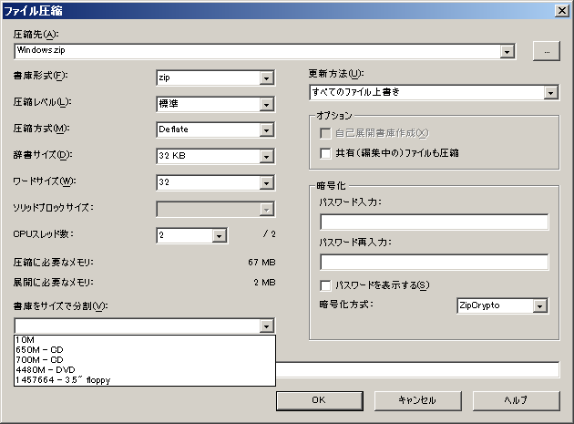
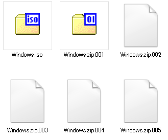

分割圧縮の方法
大きなファイルやフォルダごとを圧縮する際など、圧縮したファイルを分割保存したい場合は、圧縮時のオプションで分割サイズを指定します。
GUIの画面で設定する
ファイルもしくはフォルダを右クリックして圧縮メニューを選んだ際など、GUIのダイアログで設定する場合は、左下にある「書庫をサイズで分割」で設定します。
FDやCD、DVDといった特定メディアサイズや10Mはドロップダウンメニューから選択できます。それ以外の任意のサイズにしたい場合は、「100M」など数字に続けて単位を入力します。 たとえば、ISOイメージ（約500MB）を100MBで分割ZIP圧縮した場合は、.001、.002……といった拡張子が付いた圧縮ファイルが作成されます。
元のデータがISOファイルやたくさんの写真（JPEG等）をまとめて圧縮する場合などは、その中に含まれるファイルがすでにZIP相当の圧縮がされていており、ZIP圧縮ではあまりサイズが小さくならないので、7z形式を使ったほうがいいでしょう。
例）
Windows98のインストール元CDのISOイメージ：484MB
ZIP圧縮（7-Zipの標準設定＝通常のツールよりやや強い）で100MB分割：
5ファイル、415MB
7z圧縮（超圧縮）で100MB分割：
4ファイル、350MB
コマンドで分割圧縮
7za.exeコマンドを使って分割圧縮を行うには、「-v」オプションを使います。
"C:\Program Files\7-Zip\7z.exe" a -v100m Windows.zip Windows.iso
「-v」に続けて分割ファイルのサイズを指定します。MB単位の場合は「m」、GB単位の場合は「g」を付けます。b（バイト）、k（キロ）、m（メガ）、g（ギガ）の単位が使えます。
OSDN Project